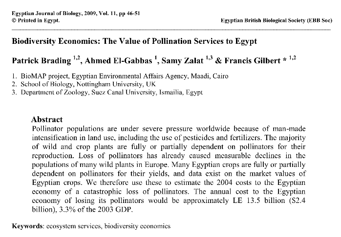

Patrick Brading; Ahmed El-Gabbas; Samy Zalat; Francis Gilbert (2009). Biodiversity economics: the value of pollination services to Egypt. Egyptian Journal of Biology, 11, 45-51.
Abstract:
Pollinator populations are under severe pressure worldwide because of man-made intensification in land use, including the use of pesticides and fertilizers. The majority of wild and crop plants are fully or partially dependent on pollinators
for their reproduction. Loss of pollinators has already caused measurable declines in the populations of many wild plants in Europe. Many Egyptian crops are fully or partially dependent on pollinators for their yields, and data exist on the
market values of Egyptian crops. We therefore use these to estimate the 2004 costs to the Egyptian economy of a catastrophic loss of pollinators. The annual cost to the Egyptian economy of los ing its pollinators would be approximately LE 13.5
billion ($2.4 billion), 3.3% of the 2003 GDP.
|

|
Download PDF

|
Patrick Brading, Ahmed El-Gabbas, Samy Zalat & Francis Gilbert 2009
Biodiversity economics: the value of pollination services to Egypt
Egyptian Journal of Biology, 11, 45-51
Abstrac: Pollinator populations are under severe pressure worldwide because of man-made intensification in land use, including the use of pesticides and fertilizers. The majority of wild and crop plants are fully or partially dependent on
pollinators for their reproduction. Loss of pollinators has already caused measurable declines in the populations of many wild plants in Europe. Many Egyptian crops are fully or partially dependent on pollinators for their yields, and data exist
on the market values of Egyptian crops. We therefore use these to estimate the 2004 costs to the Egyptian economy of a catastrophic loss of pollinators. The annual cost to the Egyptian economy of losing its pollinators would be approximately LE
13.5 billion ($2.4
billion), 3.3% of the 2003 GDP.
Introduction: Our lives are heavily dependent upon the planet's biodiversity and the ecological systems that it supports. The many products (e.g. raw materials such as timber) and services (e.g. climate regulation) provided by these ecosystems
are not only essential to our own survival but also to the functioning of the Earth's life-support system (Millenium Ecosystem Assessment 2005).
Due to the difficulty of placing a realistic monetary worth on ecosystems, their services are not given adequate importance when making policy decisions (van Jaarsveld et al. 2005). Agriculture in particular has many obvious dependencies on
natural services provided by the ecosystem. Ironically, however, agriculture is one of the main driving forces behind the decline of biodiversity (UNEP 2007).
Pollination is a prime example of a supporting service that is being negatively affectedby agricultural practices, as well as by other factors such as global warming and urbanisation (Klein et al. 2007). Pollination is essential to most plants
for reproduction, including commercial crops. This ecosystem function is provided by many wild pollinator species. There have been worldwide declines in pollinator diversity (Dias et al. 1999, Klein et al. 2007), with declines identified in at
least one region or country on every continent (except Antarctica), including the UK and Netherlands in Europe (Biesmeijer et al. 2006).
The types of pollinators in decline include wild bees (social and solitary), domesticated honeybees, hoverflies, butterflies, bats, hummingbirds and other small mammals. The causes of these declines in pollinator biodiversity are almost
certainly related to changes in landuse (Klein et al. 2007).
Pollinators require local floral diversity and nesting sites in order to persist in the unnatural environment of farmed land, but loss of natural habitat (usually related to land use practices) prevents this. Agricultural intensification leads
to loss and fragmentation of natural pollinator habitat, while climate change, introduction of alien plants and competition with non-native fauna adds to the pressure placed on pollinator populations.
Without the service provided by pollinators, many plant species would be driven to extinction, and cultivation of many modern crops would be impossible. Many crops are wholly dependent on cross-pollination (such as melons and squash) by
pollinators, while other crops show significant yield increases when cross-pollinated instead of self-pollinated (such as Brading et al.: apples, tomatoes and cotton). It has been estimated that pollination is responsible for as much as 30% of
agricultural food production (UNEP 2007), and in some cases pollination services may contribute as much or more to yields than fertilisers. Due to its ability to dramatically improve yields, the economic value of natural pollination worldwide is
thought to be between US$65 and US$70 billion each year (Dias et al. 1999). Inadequate pollination can not only reduce yields, but may also delay them and be the reason for inferior fruit production.
Domesticated honeybees remain the world’s most important pollinators (Klein et al. 2007), but even they are declining and disappearing for no obvious reason (BBC 2007). Without wild pollinator species, current levels of agricultural productivity
are under threat.
The International Pollinators Initiative (Dias et al. 1999) was adopted by the Convention on Biological Diversity because of the perceived threat to such a valuable ecosystem service. However, action by politicians and decision-makers is
hampered by a lack of estimates of the true value of this ecosystem service. Several methods have been proposed that try to give a monetary value to ecosystem services, none of them perfect (de Groot et al. 2002, Chee 2004). Direct market
valuation is the exchange value that services have in trade.
While straightforward, the value is only what the product is worth to a buyer, and omits other less direct values of the services (de Groot et al. 2002). However, it is simple to understand and clear to apply, especially for pollination where
the value of the product is often available.
Stimulated by a recent review on experimental evaluations of the impact of pollination on crops (Klein et al. 2007), we use here the Direct Market Valuation approach to estimate the economic value of pollination to the Egyptian economy.
Materials & Methods
Egypt’s main arable output covers 70 different plants, including non-consumed field crops (such a cotton), fruits, nuts and vegetables. These plants differ in their reliance on pollinators for successful fruit and seed setting, from full
dependence (e.g. watermelon, melon, custard apples) to total independence (e.g. date, grape, maize, olive). The review by Klein et al. (2007) places the available information for each crop into one of four categories of the impact of pollinator
loss on yield: essential (reduction of >90%), high (40-90% loss), modest (10-40%), little (0-10%) and none (0%). For calculation, we used the midpoint of these ranges: 95, 65, 25, 5 and 0 respectively. Although these are approximations, when
summed over all the types of Egyptian crops, the final figure is likely to be a reasonable estimate.
Klein et al. (2007) was based on a worldwide review rather than an Egyptian-specific one, and it would be very useful to have an equivalent review of Egyptian pollination studies:
alas, such a review does not exist. The estimated reductions represent the average loss in yield obtained in all the various experiments carried out on any one crop type anywhere in the world.
The figures might well be different under Egyptian conditions, but until the relevant experiments and review have been done, we do not know. The overall message is, however, unlikely to be very different with Egypt-specific values for the impact
of pollinator loss.
The total values of each of the Egyptian crops was obtained from the publication by the Economic Affairs Sector (2006) of the Ministry of Agriculture. This gives values either overall, or split by season or by land type (old or newly developed
areas): we used the overall values.
The use of each crop, and therefore the impact of pollinator loss, varies. Thus some crops produce vegetative growth that is consumed: pollinators affect seed production for the next generation in those crops that are grown from seed each year.
For crops that are grown vegetatively, the impact of pollinators is more long-term, but no less serious. For example, a standard fodder crop in Egypt is barseem (i.e. alfalfa), which can be cropped for six yearsbefore needing to be renewed from
seed. However, alfalfa is well-known for its seed production being dependent on wild-bee pollinators because honeybees are especially poor: Brading et al.: semi-domesticated solitary bees (Megachile rotundata), on the other hand, do the job very
well. Here we simply multiplied the value of the crop by the proportion of the yield that would be lost if pollinators were absent. Over the long term, we regard this as justifiable.
Results
The results (Table 1) are dominated (46%) by the impact of pollinator loss on alfalfa, predicted to cause annual losses of more than LE 6 billion (more than US $ 1 billion). It is true that even if seed production were reduced, this might not
affect the production of the fodder itself.
However, in the long term, there would be a substantial impact. For valuable crops, such asmelons, pollinator loss would also have a huge economic impact, an annual loss of almost LE 1.9 billion (US $ 333 million).
Overall, according to these calculations, almost LE 13.5 billion (US $ 2.4 billion) would be lost every year. Since Egypt’s GDP in 2003 was LE 411 billion (UNESCO 2007), this represents about 3.3% of GDP.
Table 1: Monetary losses based on the average yield reduction that would be the consequence of loss of pollinators in Egypt for the crop production of 2004. There are approximately 5.7 LE to each $US. Pollination losses are taken from Klein et
al (2007); crop values from Economic Affairs Sector (2006).
Commodity Latin name Pollination effect Pollination clover, alfalfa Trifolium spp, Medicago sativa Cotton Gossypium spp parts eaten 25 3131.3 782.8 Fodder (not alfalfa) various seeds 25 313.9 78.5 estimated % loss Lufa Luffa aegyptiaca seeds 65
109.8 71.4 probably 95% but some selfing occurs Sunflower Helianthus annuus parts eaten 25 96.5 24.1 Linseed, Flax, Straw Linum usitatissimum seeds 5 111.9 5.6 Safflower seed Carthamus tinctoria parts eaten 5 46.0 2.3 Kenaf Hibiscus cannabinus
parts eaten 65 2.7 1.8 probably needs pollinators Egyptian lupin Lupinus albus seeds 5 11.4 0.6 mainly selfing Sugar Beet Beta vulgaris vulgaris seeds 0 357.6 0 Barley Hordeum spp independent 0 228.2 0 Rice Oryza spp independent 0 6678.6 0 Sugar
Cane Saccharum officinarum independent 0 2191.1 0 Sorghum Sorghum spp independent 0 1001.8 0 Wheat Triticum spp independent 0 8903.9 0 Maize/corn/sweetcorn Zea mays independent 0 7361.4 0 Fruit crops Melon Cucumis melo parts eaten 95 1031.8
980.2 Mango Mangifera indica parts eaten 65 1323.3 860.1 Apple Malus 'domestica' parts eaten 65 930.7 605.0 Cantaloupe Cucumis melo parts eaten 95 547.7 520.3 Peach Prunus persica parts eaten 65 623.3 405.2 Watermelon Citrullus lanatus parts
eaten 95 399.5 379.5 Apricot Prunus armeniaca parts eaten 65 169.0 109.8 Orange Citrus spp parts eaten 5 2166.6 108.3 Banana Musa spp breeding potential 5 1345.4 67.3 estimated % loss Fig Ficus carica parts eaten 25 258.4 64.6 Pear Pyrus
communis parts eaten 65 91.3 59.4 Guava Psidium guajava parts eaten 25 235.9 59.0 Strawberry Fragaria spp parts eaten 25 134.6 33.6 Plum Prunus x domestica parts eaten 65 47.3 30.7 Tangerine, Mandarine Citrus spp parts eaten 5 595.1 29.8 Lemon,
lime Citrus spp parts eaten 5 296.5 14.8 Prickly pears (Cactus) Opuntia parts eaten 25 48.9 12.2 Custard apple Annona spp parts eaten 95 10.8 10. Pomegranate Punica granatum parts eaten 25 39.5 9.9 Medlar (Loquat) Eriobotrya japonica parts eaten
65 2.1 1.4 Sour orange Citrus spp parts eaten 5 19.2 1.0 Kaki persimmon Diospyros kaki parts eaten 5 14.4 0.7 Grapefruit, Pomelo Citrus spp parts eaten 5 1.9 0.1 Olive Olea europaea independent 0 698.2 0 Date Phoenix dactylifera independent 0
1255.1 0 Grape Vitis vinifera independent 0 1912.5 0 Herb crops Rosemary Rosemarinus officinalis breeding potential 65 155.4 101.0 estimated % loss Marjoram Origanum majoranae breeding potential 65 58.6 38.1 estimated % loss Karkadeh Hibiscus
sabdariffa parts eaten 65 51.4 33.4 probably needs pollinators Coriander Coriandrum sativum parts eaten 65 48.9 31.8 Basil Ocimum basilicum breeding potential 65 38.9 25.3 estimated % loss Wormwood Artemisia spp seeds 65 37.1 24.1 estimated %
loss Fenugreek Trigonella foenumgraecum parts eaten 65 35.1 22.8 estimated % loss Parsley Petroselinum crispum breeding potential 65 27.9 18.2 estimated % loss Cumin Cuminum cyminum parts eaten 65 24.6 16.0 Sage Salvia spp seeds 65 22.9 14.9
estimated % loss Oregano Origanum vulgare breeding potential 65 22.9 14.9 estimated % loss Mint Mentha spp breeding potential 65 20.5 13.3 estimated % loss Fennel Foeniculum vulgare seeds 65 12.4 8.0 Anise Pimpinella anisum seeds 65 9.8 6.4 Dill
Anethum graveolens seeds 25 24.1 6.0 estimated % loss Caraway Carum carvi parts eaten 25 17.5 4.4 Henna Lawsonia inermis parts eaten 65 2.8 1.8 estimated % loss Other aromatics various seeds 25 1.5 0.4 estimated % loss Coriander, green
Coriandrum sativum seeds 65 0.4 0.3 Nut crops Almond Prunus dulcis parts eaten 65 201.2 130.8 Sesame seed Sesamum orientale parts eaten 25 157.4 39.4 Peanut, Groundnut Arachis hypogaea parts eaten 5 437.6 21.9 Pecan nut Carya illinoinensis
independent 0 3.8 0 Vegetable crops Squash, courgette, pumpkin Cucurbita spp parts eaten 95 367.4 349.0 Cucumber Cucumis sativus parts eaten 65 348.7 226.6 Tomato Lycopersicon esculentum parts eaten 5 3797.0 189.8 Beans, Broad, dry Vicia faba
parts eaten 25 757.9 189.5 Aubergine (eggplant) Solanum melongena parts eaten 25 398.4 99.6 Potato Solanum tuberosum breeding potential 5 1503.9 75.2 estimated % loss Beans, Broad, Green Vicia faba parts eaten 25 172.9 43.2 Molokhayia Corchorus
olitorius seeds 95 43.6 41.4 grown from seed, and pollination required Okra Abelmoschus esculentus parts eaten 25 140.4 35.1 Onion Allium cepa seeds 5 580.7 29.0 estimated % loss Soybean Glycine max parts eaten 25 87.1 21.8 Carrot Daucus carota
seeds 65 28.7 18.7 Snake Cucumber Cucumis melo parts eaten 65 27.3 17.7 Sweet peppers Capsicum annuum parts eaten 5 248.2 12.4 Artichoke Cynara scolymus breeding potential 25 35.7 8.9 estimated % loss Cabbage Brassica oleracea capitata seeds 5
174.3 8.7 estimated % loss Beans, dry Phaseolus spp parts eaten 5 142.6 7.1 Garlic Allium sativum breeding potential 5 139.4 7.0 estimated % loss Beans, green Phaseolus spp parts eaten 5 137.0 6.8 Sweet potato Ipomoea batatas breeding potential
5 88.2 4.4 estimated % loss Taro Colocasia esculenta breeding potential 5 72.2 3.6 vegetatively reproduced, but pollination by flies Radish Raphanus sativus parts eaten 65 4.9 3.2 annual, and mainly crosspollinated by insects Turnip Brassica
rapa rapifera seeds 65 4.8 3.2 Rocket Eruca vesicaria sativa seeds 25 11.9 3.0 estimated % loss Beans, Kidney, Green Phaseolus spp parts eaten 5 49.8 2.5 Broccoli, Cauliflower Brassica oleracea botrytis seeds 5 43.2 2.2 estimated % loss Capsicum
(chilli pepper) Capsicum annuum parts eaten 5 28.2 1.4 Onion seed Allium cepa seeds 5 23.1 1.2 estimated % loss Beans, Kidney, dry Phaseolus spp parts eaten 5 19.8 1.0 Egyptian leek Allium ampeloprasum var. kurrat seeds 5 9.1 0.5 estimated %
loss Celery Apium graveolens seeds 5 2.3 0.1 estimated % loss Purslane (Rigla) Portulaca oleracea sativa seeds 25 0.3 0.1 estimated % loss Leek Allium ampeloprasum var. porrum seeds 5 0.4 0.02 estimated % loss Beetroot Beta vulgaris vulgaris
independent 0 0.8 0 Chard Beta vulgaris vulgaris independent 0 6.8 0 Chick pea Cicer arietinum independent 0 29.5 0 Lettuce Lactuca sativa independent 0 42.8 0 Lentil Lens spp independent 0 8.8 0 Pea Pisum sativum independent 0 184.7 0 Spinach
Spinachia oleracea independent 0 15.6 0 Total potential losses 13446.1
Discussion
Biological services, while essential for the whole planet’s survival and persistence, are often overlooked in a country’s economics. Without many of these services, invisibly working in the background, many economies would collapse. An early
estimate for the value of pollination services was 0.4% of GDP for the whole world (Costanza et al. 1997); in managed pollination, a single solitary bee (Habropoda) can be worth $20 to Vaccinium pollination (Kevan & Phillips 2001), and the
pollination services provided by nearby forest reserves for coffee plantations amounted to 7% of farm income (Ricketts et al. 2004). For comparison in the way in which we have calculated pollination services here, the value of insect ecosystem
services to the USA was estimated by Losey & Vaughan (2006) at $58 billion (made up of dung burial 0.4, pollination 3.1, pest control of native herbivores 4.5, and ‘recreation’ [food for game, fish and wildlife] 50.0). Since the GDP of the USA
in 2006 was $13 trillion, this represents only 0.45% of GDP, with pollination services accounting for only 0.02%.
In developing countries, pollinator services are almost certainly more significant in that a greater proportion of the human population is maintained by income provided by agriculture: Egypt is no exception. Crops that are fully dependent on
pollinators, such as melons (including watermelons), onions and aubergines (eggplants), are some of the biggest contributors to the Egyptian agricultural market. With declining populations of pollinators, these crops will suffer a dramatic drop
in production, and this will have a huge impact not only on the individual producers, but on the whole of Egypt’s economy.
The Nile Valley represents an environment with one of the world’s longest records of continuously habitation by man. Virtually all natural habitats have disappeared, and many insects must have been already lost before the advent of modern
agriculture. 21st-century declines of pollinators on an already-narrowed group of pollinators are likely to be serious.
Egypt needs to implement strategies to prevent and reverse declines in pollinator populations.
Changing farming techniques (i.e. reducing intensification, conserving pollinator-friendly areas), and enforcing restrictions on pesticide use would go a long way to achieving this. While this sounds an expensive and counter-productive strategy,
the potential consequences of not implementing such a change could be far more costly to Egypt’s development.
Acknowledgements: We thank Dr Moustafa Fouda for facilities in the Nature Conservation Sector of the Egyptian Environmental Affairs Agency, and for reviewing the manuscript.